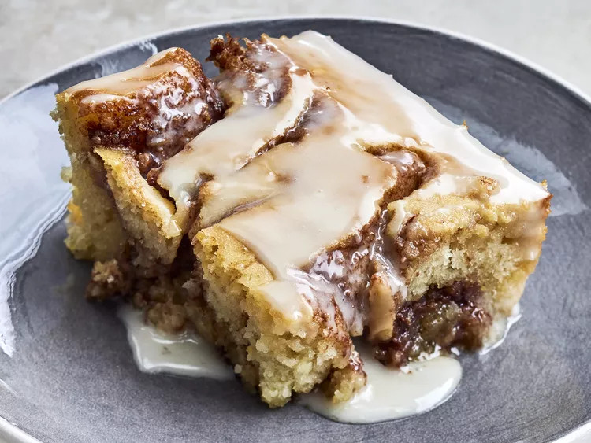

Cinnamon Roll Poke Cake
Home

A delightful dessert that combines the flavors of a cinnamon roll with the simplicity of a poke cake.
It starts with a soft, fluffy cake infused with cinnamon swirls, then you poke holes in it
and pour a sweet, sticky glaze over the top.
Ingredients
- 2 cups self-rising flour
- 4 large eggs
- ½ cup Crisco
- 1 ½ cups granulated sugar
- 1 cup milk or buttermilk, or a mix of both
- 2 teaspoons vanilla extract
- ½ cup brown sugar
- 4 teaspoons cinnamon
- 2 cups powdered sugar
- 3 tablespoons butter
- ¼ cup milk
- 1 teaspoon vanilla
Steps
- Preheat the oven to 350 degrees F. Grease and flour a 9- by 13-inch baking pan.
- With a hand-mixer or stand mixer, beat granulated sugar and Crisco until combined.
- Add eggs and continue to mix.
- Add flour, milk, and vanilla and beat for 1-2 minutes until fully combined.
- Spread half of the batter into the prepared pan.
- Combine brown sugar and cinnamon in a small bowl and mix.
- Sprinkle cinnamon-brown-sugar mixture over the batter in the pan, then spread the remaining cake batter on top. Swirl with a knife.
- Bake for 30-45 minutes, until a toothpick inserted into the cake’s center comes out clean.
- While the cake cools, combine milk, butter, sugar, and vanilla in a saucepan and heat until a gooey icing forms.
- Poke holes in the cake with a fork and pour the warm icing over top.